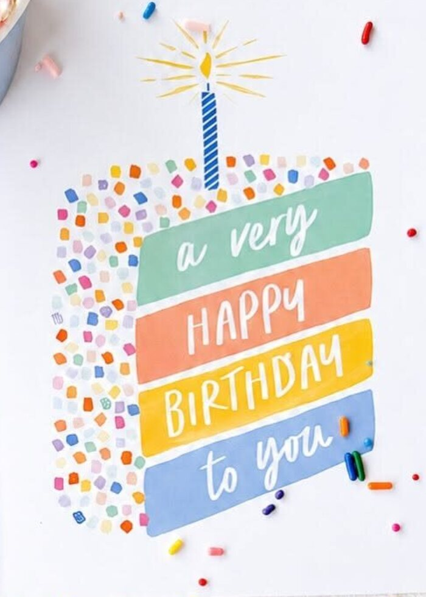

Back to the shop
Back to the shop
Paper lab
Paper interactions we built and tested. Each card says whether it made it into the shop, and why. They all work with mouse, touch and keyboard, and respect reduced motion.
Scratch to reveal

Satisfying, but it hides products behind effort. Best kept for a seasonal moment (a "card of the week" on Instagram, a gift-card reveal) rather than the shop.
Pencil writing & rubbing out
Freehand writing can't travel through a WhatsApp text order, so it would promise something we can't deliver. The rub-out feel lives on in the shop as the typed-message eraser.
Tear along the perforation
Pull me sideways. I’ll resist for a moment, then tear.
This version leaves a torn stub behind. The shop uses a lighter version on the starter-line notepad, where tearing reads naturally as "next idea".